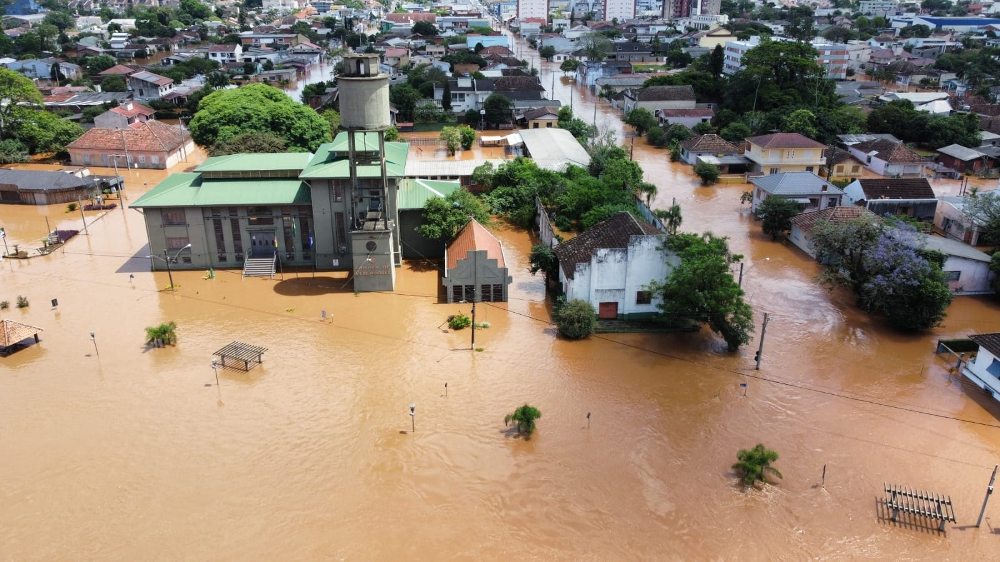
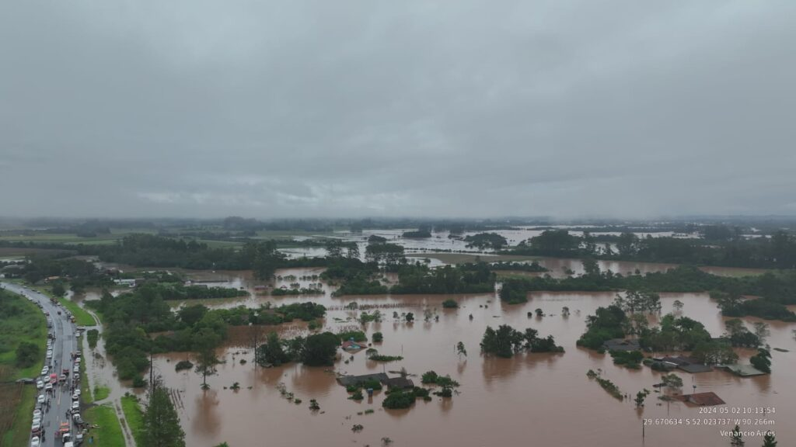
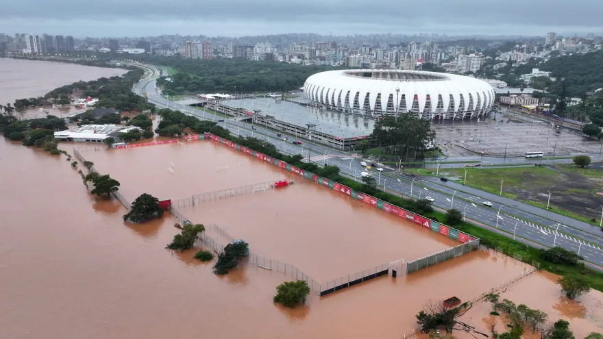

Lugares Totalmente Afetados
Vale do Taquari

Vale do Caí e Rio Pardo
 Porto Alegre
Lugares em Risco de Enchentes
Região Metropolitana de Porto Alegre
Vale dos Sinos

Como Ajudar
Doações e Voluntariado
As famílias afetadas estão recebendo doações de alimentos, roupas e produtos de higiene.
Auxílio Financeiro
O Governo Federal disponibilizou auxílio emergencial para famílias desalojadas.